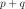
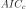

WhittleFactoryState¶
- class WhittleFactoryState(*args)¶
Last state recorded of a scalar ARMA process.
- Parameters
- pint
AR order of the estimated
 .
.- ARMACoeffsequence of float of dimension 
Coefficients of the AR then MA part of the estimated
process.- sigma2float
Variance of the white noise.
- criteriasequence of float of dimension 3
The values of the criteria AIC,  (corrected AIC) and BIC on the estimated
process.- timeGrid
RegularGrid Time grid of the
process.
Examples
Create a time series from a scalar ARMA(4,2) and a normal white noise:
>>> import openturns as ot >>> myTimeGrid = ot.RegularGrid(0.0, 0.1, 20) >>> myWhiteNoise = ot.WhiteNoise(ot.Triangular(-1.0, 0.0, 1.0), myTimeGrid) >>> myARCoef = ot.ARMACoefficients([0.4, 0.3, 0.2, 0.1]) >>> myMACoef = ot.ARMACoefficients([0.4, 0.3]) >>> myARMAProcess = ot.ARMA(myARCoef, myMACoef, myWhiteNoise) >>> myTimeSeries = myARMAProcess.getRealization() >>> myProcessSample = myARMAProcess.getSample(20)
Estimate the ARMA process specifying a range for the orders:
>>> pIndices = [1, 2] >>> qIndices = [4, 5] >>> myFactory_Range = ot.WhittleFactory(pIndices, qIndices)
Print all the models and their state:
>>> myWhittleHistory = myFactory_Range.getHistory() >>> for i in range(myWhittleHistory.getSize()): ... model_i = myWhittleHistory[i] ... arma = model_i.getARMA() ... print('Order(p,q) = '+str(model_i.getP())+', '+str(model_i.getQ())) ... print('AR coeff = '+str(model_i.getARCoefficients())) ... print('MA coeff = '+str(model_i.getMACoefficients())) ... print('White Noise - Sigma = '+str(model_i.getSigma2())) ... print('Criteria AICc, AIC, BIC = '+str(model_i.getInformationCriteria()))
Methods
Accessor to the AR coefficients of the scalar ARMA process.
getARMA()Accessor to the estimated scalar ARMA.
Accessor to the object's name.
getId()Accessor to the object's id.
Accessor to the values of the criteria AIC, and BIC.
Accessor to the MA coefficients of the scalar ARMA process.
getName()Accessor to the object's name.
getP()Accessor to AR order.
getQ()Accessor to MA order.
Accessor to the object's shadowed id.
Accessor to the variance of the white noise.
getTheta()Accessor to the coefficients of the scalar ARMA process.
Accessor to the time grid of the scalar ARMA process.
Accessor to the object's visibility state.
Accessor to the white noise defining the scalar ARMA process.
hasName()Test if the object is named.
Test if the object has a distinguishable name.
setName(name)Accessor to the object's name.
setShadowedId(id)Accessor to the object's shadowed id.
setVisibility(visible)Accessor to the object's visibility state.
- __init__(*args)¶
- getARCoefficients()¶
Accessor to the AR coefficients of the scalar ARMA process.
- Returns
- ARCoeff
ARMACoefficients The AR coefficients of the linear recurrence defining the process.
- ARCoeff
- getClassName()¶
Accessor to the object’s name.
- Returns
- class_namestr
The object class name (object.__class__.__name__).
- getId()¶
Accessor to the object’s id.
- Returns
- idint
Internal unique identifier.
- getInformationCriteria()¶
Accessor to the values of the criteria AIC, and BIC.
- Returns
- criteria
Pointof dimension 3 Values of the criteria AIC, (corrected AIC) and BIC of the estimated model.
- criteria
- getMACoefficients()¶
Accessor to the MA coefficients of the scalar ARMA process.
- Returns
- MACoeff
ARMACoefficients The MA coefficients of the linear recurrence defining the process.
- MACoeff
- getName()¶
Accessor to the object’s name.
- Returns
- namestr
The name of the object.
- getP()¶
Accessor to AR order.
- Returns
- pint
Order of the AR part of the estimated model.
- getQ()¶
Accessor to MA order.
- Returns
- qint
Order of the MA part of the estimated model.
- getShadowedId()¶
Accessor to the object’s shadowed id.
- Returns
- idint
Internal unique identifier.
- getSigma2()¶
Accessor to the variance of the white noise.
- Parameters
- sigma2positive float
Variance of the white noise.
- getTheta()¶
Accessor to the coefficients of the scalar ARMA process.
- Returns
- coeff
Point The AR and MA coefficients of the linear recurrence defining the process.
- coeff
- getTimeGrid()¶
Accessor to the time grid of the scalar ARMA process.
- Returns
- timeGrid
RegularGrid Time grid over which the ARMA process is defined.
- timeGrid
- getVisibility()¶
Accessor to the object’s visibility state.
- Returns
- visiblebool
Visibility flag.
- getWhiteNoise()¶
Accessor to the white noise defining the scalar ARMA process.
- Returns
- whiteNoise
WhiteNoise The white noise of the estimated model.
- whiteNoise
- hasName()¶
Test if the object is named.
- Returns
- hasNamebool
True if the name is not empty.
- hasVisibleName()¶
Test if the object has a distinguishable name.
- Returns
- hasVisibleNamebool
True if the name is not empty and not the default one.
- setName(name)¶
Accessor to the object’s name.
- Parameters
- namestr
The name of the object.
- setShadowedId(id)¶
Accessor to the object’s shadowed id.
- Parameters
- idint
Internal unique identifier.
- setVisibility(visible)¶
Accessor to the object’s visibility state.
- Parameters
- visiblebool
Visibility flag.